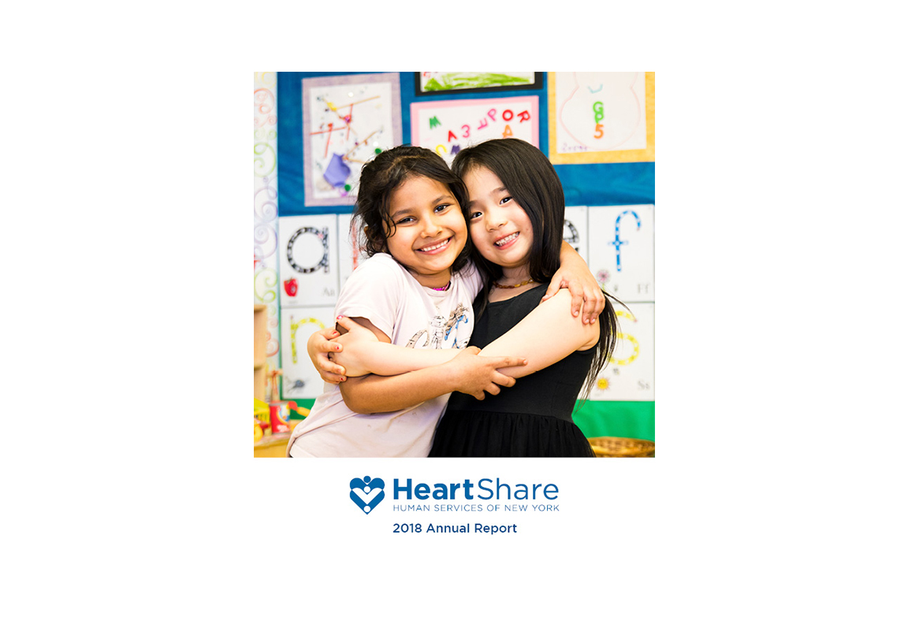

Heartshare Annual Reports
2018 Report
A 20 page report documenting 2018 for the Brooklyn based non-profit, Heartshare Human Services of New York. HeartShare provides services to over 35,000 children, adults and families throughout New York City, with over 100+ program sites. This year, HeartShare wanted to create a digital only Annual Report that emphasized their mission and values with a minimal concept, rooted in their brand’s colors. I was responsible for the art direction, photography, iconography, and layout.



60+ page report that focuses on storytelling to convey the services HeartShare provides to over 35,000 individuals throughout New York City. I was responsible for the art direction, photography, iconography, and layout. Over 2,000+ copies in print and distributed to the public.


A collection of icons designed for and used throughout the 2018 Annual Report.
2017 Report
60+ page report that focuses on storytelling to convey the services HeartShare provides to over 35,000 individuals throughout New York City. I was responsible for the art direction, photography, iconography, and layout. Over 2,000+ copies in print and distributed to the public.